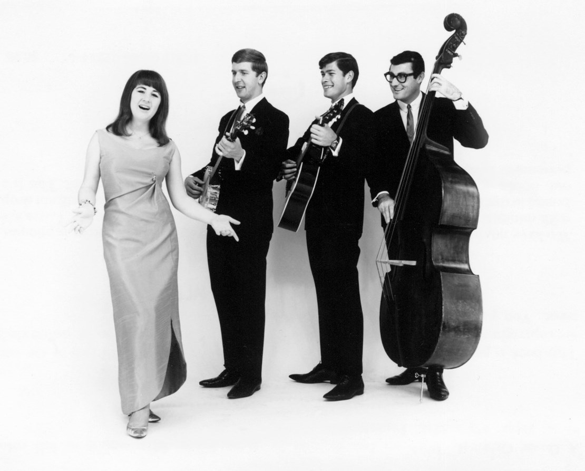

Thursday, July the 20th, 2017
back to: title, date or indexes
You will be pleased to learn that Mr Key has returned from his sojourn on foreign shores, refreshed, revivified, and ready to shower you once again with sweeping paragraphs of majestic prose. I am not going to tell you much, if anything, about my jaunt, but I think it is worth noting that I met, on my travels, a man called Dave, from Australia who, when young, used to dye chickens different colours. It was not entirely clear to me whether he did this as a form of gainful employment, or for his own entertainment. It might even have been art. I mention this because it occurred to me that an Antipodean chicken-dyer could prove a useful recurring character in the various doings recounted here at Hooting Yard. We shall see.
Oh, one more thing. I was startled to discover that Dave was unable to name the four members of The Seekers. I have long believed—with good reason—that it is the mark of any civilised person, and certainly of any civilised Antipodean, that they can rattle off those names without even having to think, much as one might list John, Paul, George, and Ringo (not forgetting Yoko, of course), or Matthew, Mark, Luke, and John, or Wynken, Blynken, and Nod. I have no doubt that every single one of my readers will be as baffled as I was by Dave's inability in this regard. Perhaps a lethal chemical constituent of the dyes used on those chickens long ago bedizened his brainpans.

Hooting Yard on the Air, July the 20th, 2017 : “Antipodean Chicken-Dyeing” (starts around 01:00)